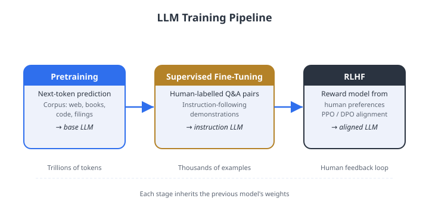

Finance models & evaluation — FinBERT, BloombergGPT, FinQA, and how we score them.
Safety & governance — bias, hallucination, and the rulebook (MiFID II, SR 11-7, EU AI Act).
the bigger picture
A finance LLM is not bought off the shelf. Someone chooses the data, pays for the scale,
adapts the weights, and answers to a regulator. This lecture is the economics and the
engineering of those four choices.
01
Data for LLMs
Where financial language comes from — and why a general tokenizer taxes it.
The raw material is scarce
Financial text is a tiny slice of the web
A model trained on "the internet" mostly reads casual prose. Financial contracts barely
register — so the model is fluent at chit-chat and weak on 10-Ks.
the bigger picture
Financial text is roughly 0.5% of a typical filtered web crawl (Wu et al., 2023).
A model that has seen the distribution of the web will be fluent in casual prose and weak on financial contracts.
The Pile (Gao et al., 2020)
800 GB, 22 curated sub-sources: web crawls, books, arXiv, GitHub, Wikipedia.
Tests whether diversity of register and subject matter improves generalisation.
RefinedWeb (Penedo et al., 2023)
Aggressive deduplication and quality filtering on CommonCrawl alone matches heterogeneous mixtures.
Quality beats volume.
What goes into a pre-training corpus
GPT-3's data recipe: quality beats raw volume
Common Crawl is huge but messy. Books and Wikipedia are tiny but trustworthy — so they get
sampled far more than their token share would suggest.
Dataset
Tokens (B)
Sampling weight
Common Crawl (filtered)
410
60%
WebText2
19
22%
Books1
12
8%
Books2
55
8%
Wikipedia
3
2%
lesson
Sampling weight ≠ raw token fraction. High-quality sources are intentionally over-sampled
relative to their raw token share — the first example of curriculum thinking. (Brown et al., 2020)
Financial corpora: four categories
Finance text comes from filings, calls, news, and alternative data
Each source has a different register, legal status, and noise profile — and choosing the
wrong mix produces a model that excels in the lab and fails on the trading desk.
Regulatory filings (EDGAR)
10-K, 10-Q, 8-K from 1993. Legal / accounting register; dense numerical tables.
European equivalents: FCA, AMF, Transparency Directive.
Financial news
Reuters, Dow Jones, Bloomberg News. Time-stamped; enables temporal alignment
with price data. Look-ahead bias risk if timestamps are ignored.
Earnings call transcripts
Conversational register; Q&A with management. BloombergGPT used
≈ 363B finance tokens from Bloomberg's archive (Wu et al., 2023).
A 10-K filed on 2 March 2021 reflects only what was known then. If future data leaks into
the training set, the model looks brilliant in-sample and fails catastrophically out-of-sample.
look-ahead bias in financial text
Record document timestamps. Ensure evaluation examples do not appear in the training set.
This is the text-data analogue of the look-ahead bias that every quant knows from price series.
Safe: train on filings dated ≤ 2020-12-31; evaluate on 2021-Q1 data.
Dangerous: mixing a full historical corpus without timestamp filtering — evaluation contamination is silent and severe.
Why finance words cost more
The tokenizer shreds financial vocabulary into pieces
A tokenizer chops text into chunks the model reads. Common English words stay whole;
finance jargon it has rarely seen gets shattered into fragments — and you pay per fragment.
Fertility ≈ 1.0 means efficient coverage; fertility > 1.5 means heavy fragmentation of domain vocabulary.
CUSIP, EBITDA, ISDA may split into 3–5 sub-tokens, each consuming an attention slot.
A domain-specific vocabulary trained on financial text will have lower fertility on that domain, reducing context-window consumption.
Text type
Fertility (BPE-50k)
Effect
Standard English prose
≈ 1.3
Efficient
Financial regulatory text
higher
Fragmented
Cleaning before training
Raw web crawl is about 90% noise
Before any learning happens, a pipeline throws away most of what it scraped. Four stages
turn garbage into a usable corpus.
Language identification — a fastText or n-gram classifier labels each document; non-target languages discarded.
Heuristic filters — minimum document length, maximum repetition fraction (RefinedWeb: documents where the most common 5-gram appears in >30% of lines are likely machine-generated), URL blacklists.
Perplexity filtering — a small reference model scores each document; high-perplexity outliers are discarded as incoherent.
MinHash deduplication + PII scrubbing — near-duplicate removal by Jaccard similarity; names, emails, phone numbers, and SSNs stripped.
The most important filter
Why removing duplicates matters most
If the same text appears a thousand times, the model memorizes it instead of learning
from it. In finance this is acute — one press release is mirrored by hundreds of portals.
why deduplication matters most
Duplicated training data causes memorisation, not generalisation. Financial press releases
are reproduced verbatim by hundreds of portals. Documents with estimated Jaccard similarity > 0.8
are near-duplicates; only one copy is retained. Using 128–256 hash functions gives a standard error
of ≈ 0.04 at \(J = 0.5\).
Mixing and curriculum
How sources are blended — and in what order
Once filtered, the question is not just what to use but how much of each
and when — data curriculum is as important as data composition.
Proportional mixing — sample each source proportional to its token count. Favours large (noisy) sources over small (clean) ones.
Up-sampling — assign sampling weight proportional to token fraction raised to power \(\alpha \in (0,1)\). Compresses the distribution and boosts clean minority sources (Books, Wikipedia). Used in GPT-3.
Curriculum learning — mixing weights change over training: easy clean text first, then harder domain-specific text. For finance: general English → financial filings → alternative data.
Replay buffer for domain adaptation
When fine-tuning on financial text, mix in 1–5% general pre-training data each batch to prevent
catastrophic forgetting. Standard in continual-learning research; directly applicable to
domain-adaptive pre-training for finance.
02
Pre-training and scaling
What the model learns from raw text — and the rule for how big to build it.
What "training" actually optimizes
Three ways to teach a model to read
Pre-training is a fill-in-the-blank game. The kind of blank you ask the model to
fill decides what it becomes good at.
The scaling question: more parameters or more data?
You have a fixed compute budget. Spend it on a bigger brain or on more reading?
Hoffmann et al. (2022) measured the trade-off with 400 carefully controlled training runs.
\(N\) = trainable parameters (model size)
\(D\) = training tokens (how much the model reads)
Compute scales as \(C \approx 6ND\) — the budget constraint that ties them together
Kaplan et al. (2020): loss decreases as a power law in \(N\) and \(D\) independently;
their estimates suggested scaling \(N\) more aggressively. Chinchilla showed they were wrong: data was under-sampled.
The answer that reshaped the field
Roughly 20 tokens of data per parameter
The compute-optimal recipe: for every parameter, feed it about twenty tokens. By that
ruler, the famous giant models were built wrong.
≈ 20
optimal \(D^*/N^*\) (IsoFLOP heuristic)
1.7
GPT-3 actual ratio (over-parameterised)
GPT-3 (175B)
Chinchilla-optimal 7B
Parameters
175B
7B
Training tokens
300B
140B
\(D/N\) ratio
1.7
20
Status
Over-parameterised
Compute-optimal
practical implication
A smaller model trained on more data often outperforms a larger model trained on less —
and inference cost favours the smaller model. This justified the 7B and 13B model families (LLaMA, Mistral).
03
Fine-tuning
Adapting a base model to finance — cheaply — and aligning it to what humans want.
A menu of adaptation
Four ways to bend a model toward your task
You don't always retrain. The choice runs from "just ask it" to "rebuild every weight,"
trading data and compute for accuracy.
Method
Params updated
Data needed
Best use case
Zero-shot
0
0
Well-defined tasks in training distribution
Few-shot (ICL)
0
1–32 examples
Novel formats; no gradient compute needed
PEFT (LoRA)
0.1–1%
1K–100K
Domain shift; resource-constrained
Full fine-tuning
100%
100K+
Max in-domain accuracy; large data budget
The hidden cost of specializing
Why fine-tuning can make a model worse
Teach a model only finance and it can forget how to be a good generalist — a real problem
when the same assistant must also answer everyday client questions.
the adaptation tax
Full fine-tuning on a narrow domain can degrade performance on adjacent tasks — a real risk when a
deployed finance LLM must also handle general client queries. The art of adaptation is buying
in-domain accuracy without surrendering the breadth that made the base model useful.
Parameter-efficient methods (LoRA, prefix tuning, adapters) mitigate this tax by keeping
the pre-trained weights frozen.
The cheap-adaptation trick
LoRA: train 0.12% of the weights, get most of the benefit
Instead of moving all seven billion weights, LoRA freezes them and learns a tiny pair of
side-matrices. The update is so small it fits in a fraction of the memory.
≈ 8.4M
trainable params (7B LLaMA, r=8)
0.12%
of the full model
< USD 300
FinGPT training cost (Yang et al., 2023)
What you save
LoRA vs. full fine-tuning: 90 minutes against 40 hours
The payoff is wall-clock time and money — and after training you merge the side-matrices
back in, so serving the model costs nothing extra.
LoRA (r=8)
Full fine-tuning
Trainable params
8.4M (0.12%)
7,000M (100%)
A100 training time
≈ 90 min
≈ 40 hr
Inference overhead
Zero (merge \(BA\))
None
PEFT variants at a glance
Prefix tuning (Li & Liang, 2021): trainable prefix vectors prepended to K and V at every layer;
effective for generation; consumes context window.
Adapters (Houlsby et al., 2019): small bottleneck modules after each sub-layer; add inference latency unless fused.
QLoRA: LoRA with 4-bit quantised base model — enables 7B fine-tuning on a 24 GB consumer GPU.
Teaching the model to follow instructions
Instruction tuning: format diversity beats data volume
A pre-trained model predicts text; instruction tuning teaches it to respond to requests.
The key insight is that phrasing diversity matters as much as task diversity.
FLAN (Wei et al., 2022): fine-tune on many tasks formatted as instructions;
dramatically improves zero-shot generalisation to unseen tasks by exposing the model to diverse phrasings
of the same underlying operation.
InvestLM (Yang et al., 2023): LLaMA-65B on a small, curated financial
instruction set — CFA exam questions, SEC filings, quantitative finance threads.
Expert-rated responses comparable to GPT-3.5 and GPT-4.
Supports the Superficial Alignment Hypothesis: quality matters more than raw quantity.
PIXIU / FinMA (Xie et al., 2023): 136,000 financial instruction samples
across 5 task types and 9 datasets. Both a fine-tuned model and an open evaluation benchmark.
the bigger picture
Exposing the model to many phrasings of the same operation ("classify," "what is the sentiment,"
"positive or negative?") improves generalisation far beyond single-format training.
The training pipeline
From pre-training to aligned model: three stages
Alignment is not a single step. A raw pre-trained model must pass through supervised
fine-tuning, reward learning, and policy optimisation before it behaves reliably in finance contexts.

Figure. The three-stage training pipeline for aligned language models:
large-scale pre-training on raw text establishes capabilities;
supervised fine-tuning (SFT) on demonstrations establishes the instruction-following baseline;
RLHF (or DPO) refines the policy toward human preferences.
Source: course illustration.
From capable to compliant
A trained model doesn't know what humans prefer
Predicting the next word makes a model fluent, not trustworthy. Alignment teaches it the
difference between an answer that sounds right and one that is accurate and compliant.
why alignment matters in finance
A base model predicts the next token; it does not know what humans prefer. RLHF aligns
behaviour to human judgement — in finance, the gap between a "plausible" answer and an "accurate,
compliant" one is exactly what alignment must close.
Stage 1 — SFT (supervised fine-tuning)
Fine-tune the pre-trained model on high-quality human-written demonstrations.
Produces the initial reference policy \(\pi_{\mathrm{SFT}}\).
Stage 2 — Reward model
Annotators rank pairs \((y_w \succ y_l)\) for the same prompt \(x\).
A reward model \(r_\phi(x, y)\) is trained to predict preference scores.
(InstructGPT, Ouyang et al., 2022)
RLHF, the final stage
Stage 3: chase the reward, but don't drift too far
The model now tunes itself to score high on the reward model — while a leash keeps it
from wandering away from the sensible behaviour it started with.
limitations for finance
Reward models can be gamed; PPO is unstable; human annotation is expensive. A single annotator
disagreement on "plausible vs. accurate" in a financial context can propagate to thousands of
training examples.
A simpler alignment
DPO: align directly, skip the reward model
Direct Preference Optimisation throws out the separate reward model and the unstable RL
loop. It learns straight from the same "this answer beats that one" pairs.
No separate reward model to train or maintain
Same preference data as RLHF; simpler single-stage supervised training loop
Empirically competitive with RLHF on alignment benchmarks
For financial LLM deployment: simpler to implement, more stable to train,
and models are easier to audit — which matters for regulatory compliance (Rafailov et al., 2023)
Interpretation
DPO increases the log-probability of the preferred response \(y_w\) relative to \(\pi_{\mathrm{ref}}\)
while decreasing that of \(y_l\) — a direct implementation of the preference signal.
Adapting to finance: two stages
Domain adaptation: continued pre-training, then task fine-tuning
Domain adaptation is not one step. A financial LLM typically requires a large unsupervised
stage to shift representations, followed by a small supervised stage for the specific task.
Stage 1 — DAPT (domain-adaptive pre-training)
Train on a large financial corpus (CLM or MLM), learning rate \(10^{-5}\)–\(10^{-4}\),
cosine schedule with warmup. Mix in 1–5% general text (replay buffer) to prevent catastrophic forgetting.
Stage 2 — Task-specific fine-tuning
Train on 1,000–100,000 labelled examples. Very small learning rate (\(10^{-5}\) with LoRA;
\(5 \times 10^{-6}\) with full fine-tuning).
Example: LLaMA-2 (7B) on Financial PhraseBank — two-stage achieves ≈ 94% vs ≈ 89%
(Stage 2 alone) vs ≈ 79% (zero-shot).
lesson from BloombergGPT
The finance-specific corpus was exhausted at ≈ 363B tokens — less than the Chinchilla-optimal
≈ 1T for 50B parameters. Domain-specific pre-training faces an inherent data ceiling.
A calibration warning
More context is not always better: information overload
Even aligned models have a sweet spot. Feed them too much information and accuracy
actually falls — a practical constraint on RAG and prompt engineering design.
Balogh & Didisheim (2025)
RLHF-aligned models in financial analysis tasks show an inverted-U relationship:
accuracy first rises then falls as the volume of input context exceeds the model's effective capacity.
Relevant for designing RAG pipelines and prompt length in financial applications.
Implication: retrieval pipelines should return the most relevant passages, not the most passages.
The flagship finance models — and the metrics that decide whether they work.
Domain adaptation that paid off
FinBERT: same architecture, finance diet, +7.8 points
Take BERT, keep reading it financial text, and sentiment accuracy jumps — almost entirely
from what it read, not from any new architecture.
How it was built (Yang et al., 2020)
BERT-base (110M params) continued pre-training on: TRC2 Reuters (1.8 GB),
Financial PhraseBank (Malo et al., 2014), and analyst reports. MLM objective;
WordPiece vocabulary unchanged — gains arise from weight updates, not vocabulary expansion.
Huang et al. (2023): larger variant on 4.9B tokens predicts stock returns and corporate fraud.
Model
Accuracy
Human upper bound (inter-annotator agreement, Malo et al. 2014)
≈ 97%
FinBERT
88.5%
BERT-large (general)
80.7%
Dictionary / rule-based
≈ 72%
Financial PhraseBank, all-agree split. The 7.8 pp gain over BERT-large comes
almost entirely from domain-specific continued pre-training, not architectural changes.
Typical FinBERT gains over general BERT are 5–15 pp on in-domain data.
Beyond FinBERT
A family of finance encoder models
FinBERT proved the concept. A generation of variants extended it to richer architectures,
larger corpora, and non-English markets — all following the same principle.
RoBERTa-financial
Replaces BERT's next-sentence-prediction objective with longer training and larger batches;
stronger representations for classification and extraction tasks.
FLANG (2022)
Financial Language model for NLP in finance — covers five financial domains.
Trains on a substantially larger financial corpus than FinBERT.
the general principle
Domain-adaptive pre-training of encoder models consistently improves financial NLP by
5–15 percentage points on in-domain data. The gains arise from richer representations
of financial terminology, not architectural changes.
Non-English markets
Models pre-trained on German or French regulatory text show similar gains relative to
multilingual BERT. Architecture stays identical; the corpus changes.
A finance giant — built against the rule
BloombergGPT: 50B parameters, but under-trained
Bloomberg built a 50-billion-parameter finance model on its proprietary data. By the
Chinchilla ruler it was fed too little — proof that even deep pockets miss the optimum.
Training corpus (Wu et al., 2023)
708B total tokens: 363B finance-specific (Bloomberg News 105B, Web 88B, Filings 88B,
Press 63B, Social 19B) + 345B general (The Pile).
Mix: 51% finance / 49% general. ALiBi positional encodings.
BloombergGPT
Chinchilla optimal
Parameters
50B
50B
Training tokens
363B
≈ 1T (50B × 20)
Under-trained by the Chinchilla criterion. Finance corpus was exhausted;
adding more general text would dilute financial content below 50%.
results
BloombergGPT outperforms GPT-NeoX-20B by 10–20% on financial benchmarks (FPB, FiQA-SA,
Headline, NER, ConvFinQA) while matching general NLP performance (MMLU, BIG-bench).
What finance LLMs actually do
Three task families: NER, numerical QA, and summarisation
Financial NLP is not just sentiment. Named entity recognition, numerical reasoning over
tables, and faithful summarisation each require different architectures and training strategies.
Named Entity Recognition
Token-level classification head on an encoder: B-ORG, I-ORG, B-MON, etc.
(CoNLL-2003 BIO scheme extended to financial entities: company names, instruments, monetary amounts).
Numerical QA (FinQA)
Chen et al. (2021): 8,281 QA pairs requiring multi-step arithmetic over earnings reports.
Program-executor architecture — model generates symbolic operations evaluated by an external calculator.
Human accuracy ≈ 91%; top neural systems ≈ 68–75% at publication.
Summarisation and factual fidelity
CLM or span-corruption objective on (document, summary) pairs achieves reasonable ROUGE scores,
but financial summaries require factual precision — "revenue grew 2%" vs. "12%" is catastrophic.
RAG is one practical mitigation.
Multi-task (Zhang et al., 2023)
LoRA fine-tuning of Llama 2 for simultaneous sentiment, key-point extraction, summarisation,
and NER — competitive accuracy at a fraction of full fine-tuning cost.
Confirms PEFT methods are viable for end-to-end financial NLP pipelines.
The score sheet
Financial NLP benchmarks: what they measure and how hard they are
Practitioners need a shared score sheet. Five benchmarks define the landscape, each
testing a different capability — from simple sentiment to multi-hop arithmetic.
Benchmark
Task type
Size
Primary metric
FPB (Financial PhraseBank)
3-class sentiment
4,846
Accuracy
FiQA-SA
Aspect sentiment (implicit jargon)
1,173
MAE
FinQA
Numerical QA (multi-step)
8,281
Exec. accuracy
ConvFinQA
Conversational QA
3,892
Exec. accuracy
Headlines (Sinha et al.)
9-class labelling
11,412
Avg. F1
FinBen (Xie et al., 2024)
42 datasets, 24 tasks, 21 models (GPT-4, ChatGPT, Gemini, open-source).
Verdict: LLMs excel at extraction and textual analysis but
struggle on advanced numerical forecasting and decision-making — exactly what practitioners want most.
How do we grade a model?
Perplexity and Macro-F1: fluency vs. fairness
Two different questions: how surprised is the model by real text (perplexity), and how
well does it classify every category — including the rare, important ones (Macro-F1)?
Perplexity
Measures how surprised the model is by held-out text — lower is better.
Three limits: (1) not comparable across vocabulary sizes; (2) not a task metric;
(3) in-domain perplexity does not predict zero-shot performance on out-of-domain tasks.
Best used as a training diagnostic.
Macro-F1
Treats all classes equally regardless of frequency — right for imbalanced financial datasets
where rare event classes (fraud alerts, covenant violations) matter as much as common ones.
Summaries and evaluation limits
ROUGE for summaries — and its limits in finance
ROUGE checks how much of a reference summary the model recovered — but in finance,
surface overlap does not guarantee factual accuracy.
the factuality gap
ROUGE rewards n-gram overlap with a reference; it does not penalise hallucinated numbers.
A summary reporting "revenue grew 2%" scores the same as "revenue grew 12%" if all other
n-grams match. Production pipelines supplement ROUGE with NLI-based factuality checks:
a secondary model verifies that every claim in the summary is entailed by the source document.
Breaking the model on purpose
Four ways a finance LLM fails under red-teaming
Adversarial testing surfaces recurring, finance-specific failure modes — the kind that
turn a confident answer into a compliance incident.
Factual hallucination — fabricated prices, earnings figures, or specific revenue numbers;
"revenue grew 2%" when the 10-K says 12%.
Regulatory hallucination — non-existent regulatory provisions, wrong article numbers,
statements attributed to bodies that did not make them.
Compliance failure — personalised investment advice without required licensing disclosures;
text designed to manipulate market sentiment.
Information barrier violations — inferring material non-public information from patterns in training data.
empirical illustration · Lopez-Lira & Tang (2023)
ChatGPT sentiment scores predicted next-day stock returns; long-short strategy Sharpe ratios were high
in early sample and declined as the signal became publicly known and arbitraged away.
Any published alpha source degrades once it is public.
05
Safety and governance
The biases baked into the data, the lies the model tells, and the rulebook around both.
The data has a worldview
Four biases baked into financial training data
A model inherits the blind spots of what it read. In finance, four recurring biases
systematically tilt its picture of the world — these are not edge cases but structural features
of every financial corpus (Bender et al., 2021).
survivorship bias
Corpora overrepresent successful firms: public companies file EDGAR; bankrupt or never-public firms do not.
The model learns a rosier world than practitioners inhabit.
Temporal bias
"CDO" meant one thing in 2006 (sophisticated product) and another in 2009 (toxic instrument).
Models trained on multi-decade corpora conflate these meanings without explicit temporal context.
Geographic & cultural bias
English-language, US-centric text dominates: US SIC codes vs. NACE codes, GAAP vs. IFRS,
SEC vs. European regulatory standards. Non-US deployment requires explicit awareness.
Analyst consensus bias
Commentary echoes dominant sell-side views; contrarian signals are rarer in the training distribution.
Models learn to replicate consensus rather than independent analysis.
When the model makes things up
Two kinds of hallucination, four layered defenses
Models invent facts and misquote rules. No single fix works — production systems stack
several defenses with an audit trail at every step (Ji et al., 2023).
Two hallucination types
Factual — fabricated prices, dates, figures not in any training document
Regulatory — rules that are outdated, misquoted, or jurisdiction-mismatched
Confidence calibration — flag or reject responses below a calibrated threshold
Output verification — a checker flags claims inconsistent with a structured knowledge base
Human-in-the-loop — route low-confidence / high-stakes outputs to expert review
no single mitigation is sufficient
Production deployments should layer at least two mitigations, with audit trails at every step.
The rulebook
Three regimes that govern finance AI
Deploying an LLM in finance means answering to regulators. Three frameworks set the bar
for explainability, validation, and oversight — and they are not optional.
MiFID II (Art. 37)
Research independence: LLM contributions need demonstrable suitability and explainability.
Attention-weight visualisations are not sufficient — they show co-occurrence, not causal reasoning.
Firms must implement auxiliary explanation mechanisms (LIME, SHAP, structured decision logs).
SR 11-7 (Fed)
Model-risk management with tiered validation. High-risk models (credit, capital, trading)
need independent validation, assumption documentation, and periodic monitoring.
Industry practice: lighter validation for summarisation; full SR 11-7 for credit scoring.
EU AI Act (Aug 2026)
High-risk systems (credit scoring, insurance pricing): technical documentation, human oversight,
accuracy and robustness requirements before deployment.
GPAI models with systemic risk: adversarial testing + incident reporting to the European AI Office.
Operationalizing the rules
Classify the risk, then control it
Governance starts by labelling each use case by how much damage a bad output could do —
then attaching controls proportional to that risk.
Fine-tuning — LoRA (0.12%, 90 min vs. 40 hr), instruction tuning (FLAN, InvestLM, PIXIU/FinMA 136K), domain adaptation (two-stage DAPT)
Alignment — RLHF (SFT → reward → PPO); DPO simplifies to one supervised objective; information-overload warning (Balogh & Didisheim, 2025)
Finance — FinBERT +7.8 pp; BloombergGPT 10–20% gain; FinQA program executor (human 91%); FinBen (42 datasets, LLMs struggle on forecasting)
Governance — MiFID II + SR 11-7 + EU AI Act 2026; attention weights are not explanations; four-component governance framework
Lecture 4 — AI Agents in Finance
How do we compose trained LLMs into agents that plan, use tools, retrieve data, and
operate autonomously? Multi-agent orchestration, tool-use APIs, and agent-specific failure modes.
Key refs: Hoffmann et al. (2022) · Wu et al. (2023) ·
Rafailov et al. (2023) · Lopez-Lira & Tang (2023) · Balogh & Didisheim (2025).
A
Appendix — systems & efficiency
Distributed training, kernels, and PEFT variants. Beyond the core lecture.
Appendix · scaling the hardware
Three ways to split a model across machines
A 7B model in full precision needs ≈ 112 GB — more than any single GPU holds.
Three complementary strategies address this; they are combined in practice.
Three engineering tricks shrink the memory bill so far bigger models fit on the same chips.
Mixed precision (bfloat16)
Weights in 16-bit with an fp32 master copy for the optimiser; halves memory and HBM bandwidth.
bfloat16 preferred: same 8-bit exponent as float32 preserves dynamic range needed for small gradients.
Dynamic loss scaling prevents gradient underflow.
Gradient checkpointing
Discard intermediate activations and recompute them in the backward pass.
Activation memory falls from \(O(L \cdot T \cdot d)\) to \(O(\sqrt{L} \cdot T \cdot d)\)
with optimal checkpoint placement, at ≈ 33% extra FLOPs.
Appendix · the attention kernel
FlashAttention: exact attention, far less memory traffic
Attention's bottleneck is shuffling a huge matrix to and from memory. FlashAttention keeps
the work in fast on-chip memory — same answer, far fewer round-trips.
Why it matters
For \(T = 4{,}096\), the naive attention matrix is ≈ 32 MB per head, accumulating across heads and layers.
FlashAttention tiles into SRAM, reducing HBM traffic from \(O(T^2)\) to subquadratic.
Combined: bfloat16 + checkpointing + FlashAttention enable training models
4–8× larger on the same hardware.
FlashAttention enables sequence lengths of 32,000–100,000 tokens that would otherwise be memory-prohibitive.
Appendix · other PEFT methods
Prefix tuning and adapters — and why LoRA usually wins
LoRA is not the only cheap-adaptation method. Two alternatives steer the model without
retraining it — but each carries a catch LoRA avoids.
Prefix tuning (Li & Liang, 2021)
Learnable prefix matrices \(P_K, P_V \in \mathbb{R}^{L_p \times d_h}\) prepended to K and V at every layer;
only the prefixes train. Effective for generation; steals context-window budget.
Adapters (Houlsby et al., 2019)
A small bottleneck module (project down, non-linearity, project back) inserted after each sub-layer,
with a residual connection so the adapter is an identity at initialisation.
Adds \(4rdL\) parameters; adds inference latency unless fused.
why LoRA wins in practice
Zero inference overhead after merging \(W_0 \leftarrow W_0 + \tfrac{\alpha}{r}BA\);
compatible with quantised weights (QLoRA: 4-bit base model + LoRA adapters in float16);
multiple adapters swappable per task without reloading the base model;
simpler implementation via the PEFT library.